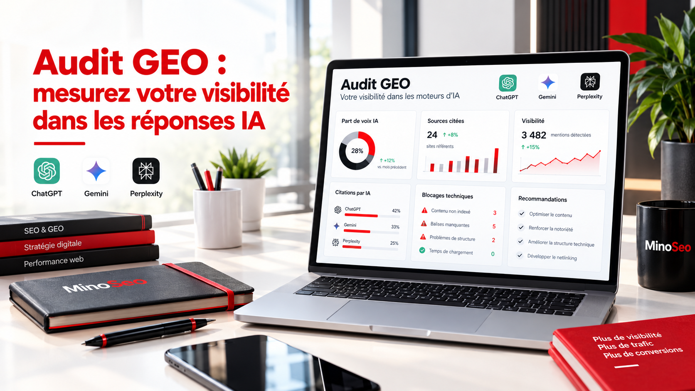

La recherche évolue : de plus en plus d’internautes posent directement une question à une intelligence artificielle et attendent une réponse synthétique, contextualisée et parfois accompagnée de sources. Dans ce nouvel environnement, votre visibilité ne dépend plus uniquement d’une position dans une page de résultats. Elle dépend aussi de la capacité des moteurs génératifs à comprendre votre entreprise, à considérer vos contenus comme fiables et à les sélectionner lorsqu’ils construisent une réponse.
Un audit GEO sert précisément à établir ce diagnostic. Chez MinoSeo, agence SEO GEO depuis plus de 15 ans, cette analyse est pensée comme un outil de décision : mesurer ce qui est visible, expliquer pourquoi certains concurrents sont davantage cités et transformer les constats en priorités concrètes.

1. Un audit GEO mesure une visibilité différente du SEO classique
Le SEO cherche notamment à améliorer la présence d’un site dans les résultats des moteurs traditionnels. Le GEO — Generative Engine Optimization — ajoute une autre question : lorsque l’utilisateur formule une demande conversationnelle, votre marque ou votre site fait-il partie des entreprises, experts ou sources retenus dans la réponse ?
Cette nuance change la méthode d’analyse. Une page peut être correctement référencée sans être citée par un moteur d’IA. À l’inverse, une marque peut être mentionnée grâce à son autorité thématique, à des contenus tiers ou à des sources reconnues, même lorsque son propre site n’occupe pas la première position Google. L’audit doit donc examiner votre écosystème de visibilité dans son ensemble.
| Dimension | Audit SEO | Audit GEO |
|---|---|---|
| Question principale | Votre site est-il visible dans les résultats de recherche ? | Votre marque est-elle présente ou citée dans les réponses IA ? |
| Mesures | Positions, clics, impressions, indexation | Part de voix, fréquence de citation, sources, concurrents cités |
| Contenu | Intentions, mots-clés, architecture | Réponses directes, entités, preuves, profondeur thématique |
| Technique | Crawl, indexation, performance | Accessibilité aux robots, structure, données interprétables |
| Autorité | Backlinks et popularité | Mentions, sources tierces, réputation et cohérence de marque |
2. Pourquoi réaliser un audit GEO maintenant ?
Le premier intérêt est d’obtenir un point de départ mesurable. Sans état initial, impossible de savoir si une stratégie améliore réellement votre présence dans les réponses génératives. L’audit construit un panel de questions liées à vos offres, à votre secteur, à vos problématiques clients et à vos concurrents, puis observe les réponses fournies par plusieurs moteurs d’IA.
Le deuxième intérêt est concurrentiel. Une absence de citation n’est pas seulement un problème de contenu : elle peut révéler qu’un concurrent bénéficie d’une meilleure couverture thématique, d’une réputation plus forte, de mentions sur des sites de référence ou de pages plus simples à exploiter. Comprendre qui est cité et pourquoi permet d’éviter les optimisations à l’aveugle.
- Établir votre part de voix sur un ensemble de requêtes conversationnelles stratégiques.
- Identifier les marques qui reviennent le plus souvent dans les réponses.
- Repérer les domaines et pages que les IA utilisent comme sources.
- Détecter les sujets sur lesquels votre expertise reste insuffisamment démontrée.
- Prioriser les corrections techniques, éditoriales et d’autorité.
Savez-vous déjà si les moteurs IA citent votre entreprise ?
Un diagnostic GEO permet de transformer une impression de visibilité en données exploitables et en priorités d’action.
Demander un échange sur votre visibilité IA3. Les 6 analyses qui structurent un audit GEO utile
Étape 1 : construire un panel de questions représentatif de vos prospects
Un audit pertinent ne se limite pas à demander à une IA le nom de votre entreprise. Il faut tester des formulations proches des usages réels : demandes de recommandations, comparaisons, questions pédagogiques, recherches de prestataires, problèmes à résoudre ou critères de choix. Les formulations doivent couvrir plusieurs niveaux de maturité, depuis la découverte d’un besoin jusqu’à la sélection d’un fournisseur.
Étape 2 : mesurer la part de voix et la fréquence des citations
Pour chaque question, l’analyse relève la présence ou l’absence de votre marque, la position relative de la mention, les concurrents cités et, lorsque l’interface les affiche, les sources associées. Répéter cette mesure sur un panel stable permet de créer un indicateur de suivi. Il ne s’agit pas d’une position figée : les réponses peuvent varier selon le moteur, le contexte et l’évolution des index.
Étape 3 : comprendre les sources que les IA préfèrent
Cette étape est souvent la plus instructive. Les moteurs peuvent s’appuyer sur votre site, mais aussi sur des médias, comparateurs, études, forums, plateformes spécialisées ou pages de concurrents. L’objectif consiste à identifier les types de sources récurrentes et les informations qu’elles apportent. Cela permet de savoir si votre stratégie doit renforcer vos propres contenus, votre présence éditoriale externe, vos réseaux sociaux ou votre autorité de marque.
Étape 4 : tester la « citabilité » de vos contenus
Une page longue n’est pas automatiquement une bonne source. Elle doit présenter des informations précises, structurées et faciles à attribuer : définitions claires, réponses courtes avant le développement, tableaux, chiffres sourcés, exemples, auteurs ou expertise identifiables. Une bonne optimisation GEO vise à rendre l’information compréhensible sans appauvrir sa valeur pour le lecteur humain.
Étape 5 : rechercher les obstacles techniques
Le diagnostic vérifie notamment l’accessibilité des pages importantes, les directives robots, les statuts HTTP, les canonicals, le rendu du contenu, le maillage interne, les sitemaps et la cohérence des données structurées. Un contenu remarquable mais difficile à explorer ou mal rattaché au reste du site peut perdre une partie de son potentiel. L’audit GEO complète donc le référencement technique au lieu de le remplacer.
Étape 6 : évaluer l’autorité hors site et les signaux de confiance
Les citations génératives ne dépendent pas uniquement de votre domaine. Les mentions de marque, les publications expertes, les avis et les liens éditoriaux participent à la construction d’un environnement de confiance. Une stratégie de backlink de qualité peut ainsi soutenir votre visibilité lorsqu’elle s’inscrit dans une logique éditoriale cohérente, loin d’une accumulation artificielle de liens.
4. Pourquoi votre entreprise n’est-elle pas citée par les moteurs d’IA ?
Il n’existe généralement pas une cause unique. Votre site peut manquer de contenus répondant précisément aux questions testées. Votre expertise peut être présente mais dispersée entre plusieurs pages faibles. Votre marque peut être peu mentionnée par des sources tierces. Des concurrents peuvent disposer de contenus plus complets, plus récents ou mieux structurés. Enfin, un problème technique peut limiter l’accès ou la compréhension de certaines pages.
| Blocage observé | Ce qu’il peut signifier | Priorité possible |
|---|---|---|
| Concurrents cités, marque absente | Écart d’autorité ou de couverture thématique | Analyser leurs sources et combler les sujets manquants |
| Site visible en SEO mais rarement cité | Contenu peu extractible ou peu différenciant | Renforcer réponses directes, preuves et structure |
| Informations de marque incohérentes | Entité difficile à interpréter | Harmoniser les informations et données structurées |
| Peu de sources externes pertinentes | Autorité hors site insuffisante | Développer relations éditoriales et liens de qualité |
| Pages stratégiques peu accessibles | Frein technique ou architecture faible | Corriger crawl, maillage et indexabilité |
5. Quels sont les avantages d’un audit GEO réalisé par MinoSeo ?
Un audit n’a de valeur que s’il conduit à des décisions applicables. L’approche de MinoSeo combine l’expérience du référenceur SEO et celle du référenceur GEO : les recommandations tiennent compte simultanément de la visibilité Google, de la compréhension par les moteurs génératifs, de l’autorité du domaine et des objectifs commerciaux.
Cette continuité est importante. Il serait contre-productif d’améliorer une page pour l’IA en dégradant son expérience utilisateur ou son potentiel organique. À l’inverse, une stratégie uniquement centrée sur Google peut laisser de côté les formats de réponse, les entités, les preuves et les sources externes qui renforcent la visibilité générative.
- Une lecture croisée SEO et GEO, sans opposer les deux disciplines.
- Un benchmark des concurrents réellement présents dans les réponses IA.
- Une analyse des sources citées pour comprendre où construire l’autorité.
- Une feuille de route priorisée selon l’impact, l’effort et les dépendances techniques.
- Des recommandations éditoriales conçues pour vos prospects autant que pour les moteurs.
- Plus de 15 ans d’expérience dans les problématiques de visibilité digitale.
Transformez votre audit en feuille de route
Technique, contenus, autorité, maillage et suivi : MinoSeo hiérarchise les actions afin de concentrer l’effort sur les leviers les plus utiles.
Découvrir l’accompagnement SEO/GEO6. Quels indicateurs suivre après l’audit ?
Le suivi doit conserver le même panel de questions afin de comparer des périodes cohérentes. Les indicateurs utiles peuvent inclure la fréquence de mention de la marque, la part de voix face aux concurrents, le nombre de requêtes où votre domaine apparaît parmi les sources et la diversité des pages citées. Ces données gagnent à être rapprochées du trafic provenant des assistants IA lorsqu’il est identifiable dans l’analytics.
Il faut cependant rester prudent : les réponses génératives sont variables et aucun prestataire sérieux ne peut garantir une citation précise dans ChatGPT, Gemini ou Perplexity. L’objectif est d’augmenter la probabilité d’être compris, considéré et sélectionné grâce à de meilleurs contenus, une architecture solide et une autorité plus crédible.
7. Passer du diagnostic à un plan d’action GEO
La restitution doit classer les recommandations. Les corrections bloquantes — accessibilité, pages importantes mal reliées, incohérences majeures — viennent d’abord. Ensuite viennent les contenus à enrichir ou à créer, puis les actions d’autorité : publications externes, relations éditoriales, annuaires réellement pertinents ou acquisition de liens thématiques lorsque cela apporte une valeur réelle.
Le GEO s’inscrit enfin dans une stratégie continue. Les moteurs évoluent, les sources changent et vos concurrents publient. Un nouvel audit ciblé ou un suivi périodique permet de vérifier les progrès, d’identifier les nouveaux écarts et d’adapter la feuille de route plutôt que d’appliquer des recettes figées.
8. L’audit GEO répond à une question simple : pourquoi eux, et pas vous ?
Lorsque des concurrents apparaissent dans les réponses d’IA à votre place, le bon réflexe n’est pas de produire davantage de contenu au hasard. Il faut mesurer la visibilité réelle, étudier les sources sélectionnées, comprendre les écarts de contenu et d’autorité, puis vérifier qu’aucun frein technique ne limite l’exploitation de votre site.
Un audit GEO transforme ainsi une nouvelle zone d’incertitude en plan d’action. Il complète le SEO, donne un point de départ à votre stratégie de visibilité générative et permet d’investir avec davantage de méthode dans les contenus et les signaux qui renforcent votre crédibilité.
Votre marque est-elle visible dans les réponses de ChatGPT, Gemini et Perplexity ?
MinoSeo vous accompagne pour mesurer votre présence, comprendre les écarts face aux concurrents et définir les priorités d’une stratégie SEO/GEO durable.
Parler de votre audit GEO